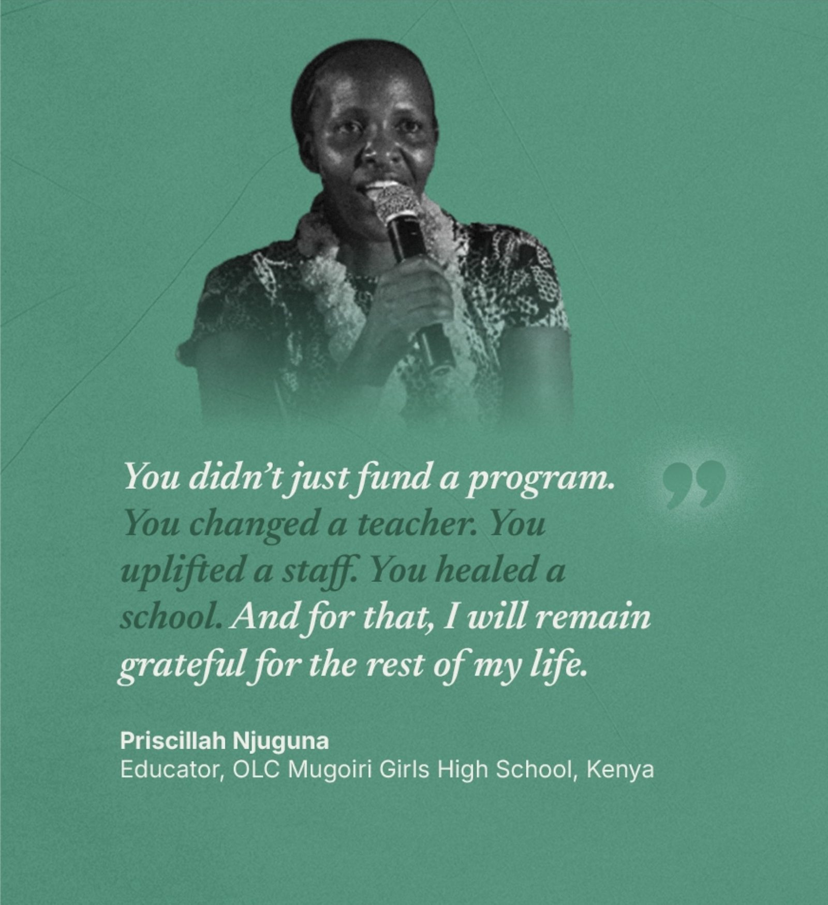
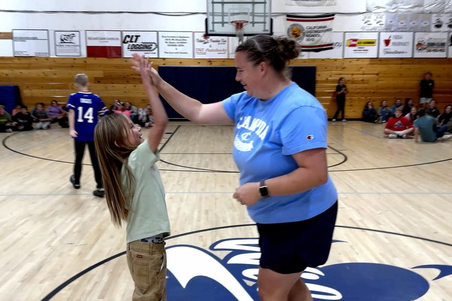
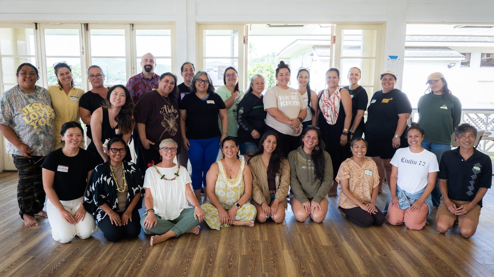
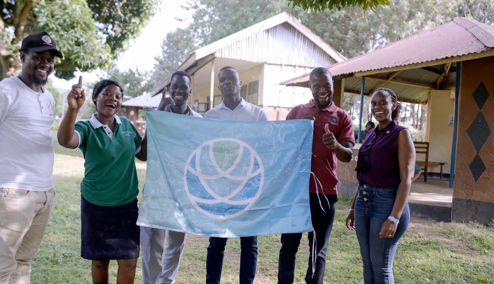

For 10 years, The Contentment Foundation has equipped teachers in 12 countries with the wellbeing tools to thrive, and to change the lives of every student who walks through their classroom doors.
It's not just lesson plans anymore. It's anxiety, grief, family situations, and everything students carry through the door. Teachers absorb it all, and are still expected to show up ready, every single day.
The most direct way to help a child is to support the wellbeing of the person who spends six hours a day with them.
In a world where a screen can answer almost any question, the one thing it cannot give a child is a present adult who knows them. That is the whole reason we exist.
In every region we work in, 86% or more of educators report the same thing: their wellbeing improved, and they show up differently in the classroom.
The Four Pillars has saved my life, personally and professionally. I can navigate the emotions and ups and downs I face, and help my students do the same. Meeting fear, grief, and other feelings with success and grace.
Teaching is all about a calling, because you have to give so much. You have to support these children emotionally, spiritually, even before academics. They say you only give what you have. And I think this is a skill. And if it can be taught to more young people, it would be a better world.Susan Muthoni MundiaChief Principal, OLC Mugoiri Girls School, Kenya
You just met our partner school in Kenya. Here's how classrooms like theirs stay supported throughout the year.
Homeroom is a monthly gift of any amount, a teacher who gets a whole year of support, and hundreds of kids who feel the difference.
Support a teacher monthly →From one teacher to a classroom of kids to a culture that lasts.
Learn more about how we work with schools →Nothing real happens until the grown-ups in the building take wellbeing seriously, starting with themselves. Leaders commit, teachers train, and through trainings and practices they build something that's genuinely their own, not one more thing from the outside that fades when we leave.
It turns into something a whole class shares. A breath before reacting. A kinder question on a rough day. Kids feel the difference, and pretty soon they're doing it without being told.
The practice spreads past one classroom. Wellbeing stops being a special initiative and becomes part of any other day. Ordinary, in the best way. The kind of school we wish we could have gone to as kids.
From a basketball court in Bhutan to a community hall in Hawaiʻi to a schoolyard in Uganda. Teachers finding their way back to themselves, together.


Focused, nonjudgmental attention to the present moment, so we can respond with clarity rather than react automatically.
Trust, empathy, compassion, and selfless service, to feel connected and bring out the best in one another.
Curiosity about our inner world, to deepen self-discovery and widen our awareness of the perspectives we and others hold.
Embracing life with acceptance and reading emotions as useful signals, so we can respond in ways that support flourishing.

Homeroom is our community of monthly supporters. You fund the training and coaching that make change like Priscillah's possible, and you get a front-row seat to it.
The Contentment Foundation is a 501(c)(3) nonprofit (EIN 47-5432756). Contributions are tax-deductible to the extent permitted by law.

When teachers are well, students do better in every way: socially, emotionally, and academically. Bring the Four Pillars to your school.
Start the conversation →
Retreats, workshops, and the worldwide Contentment Festival. Some things you have to feel to understand.
See events →
Can't give right now? Share the story of the teacher who shaped you.
Share the movement →Wellbeing tools you can actually use, real stories from educators, and the occasional thing that makes the week a little lighter.